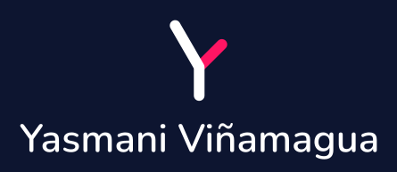
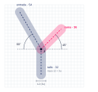
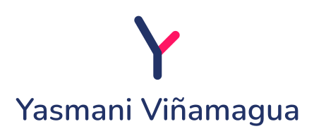
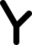
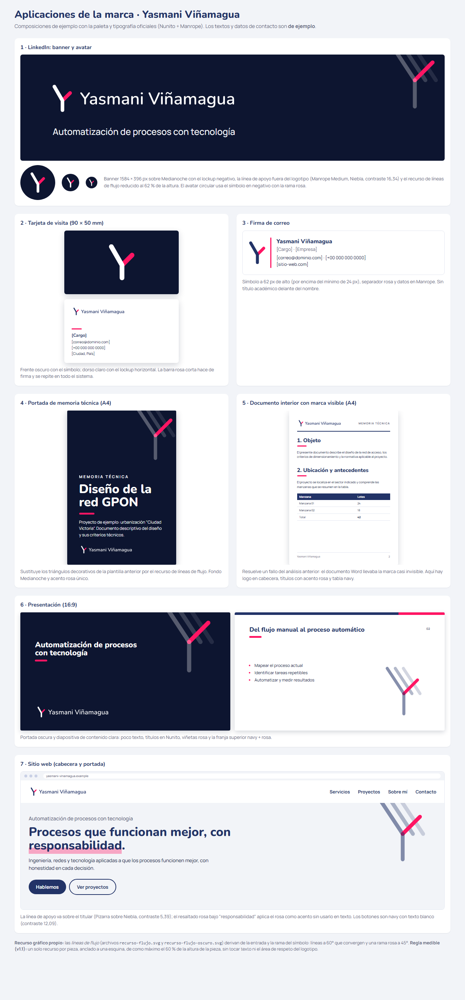
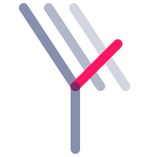

Manual de identidad visual
Yasmani Viñamagua · Marca personal de ingeniería y automatización · Versión 1.1 · 2026-10-21
Introducción
Yasmani Viñamagua es un ingeniero que se posiciona en innovación y automatización de procesos mediante el uso de la tecnología. Este manual reúne las reglas para usar su marca de forma coherente.
Nombre. Se escribe siempre "Yasmani Viñamagua", con ñ y con mayúscula inicial en ambas palabras. El título profesional no va delante del nombre y el logotipo no lleva descriptor.
Línea de apoyo. «Automatización de procesos con tecnología». Va siempre fuera del logotipo, en Manrope Medium (Niebla sobre Medianoche, 16,34; Pizarra sobre Niebla, 5,39). Se usa en el banner de LinkedIn y en la portada web; en tarjeta y firma no es obligatoria.
Origen. Rediseño de la marca personal "AY" (2023). Se conservaron el trazo monolínea con terminales redondeados y la paleta azul marino y rosa; el símbolo pasa a ser una Y, coherente con el nombre público.
El logotipo
Anatomía
| Parte | Descripción |
|---|---|
| Símbolo | Una Y asimétrica: entrada (brazo largo, azul), tallo (azul) y rama (rosa, por debajo de la entrada). |
| Nombre | "Yasmani Viñamagua" en Nunito SemiBold 600 a 44 u, convertido a trazados con las curvas de la fuente (sin <text>). |
| Lockup | Símbolo y nombre combinados, en versión horizontal (símbolo al 78 % de su tamaño, nombre centrado respecto al símbolo) o vertical. |
Construcción

| Parámetro | Valor |
|---|---|
| Lienzo | 100 × 100 |
Unidad u | 4 |
| Grosor de trazo | 12 = 3u, terminales redondos (radio 6) |
| Punto de unión J | (46, 56) |
| Entrada | 60° sobre la horizontal, arriba a la izquierda; longitud 54 |
| Rama | 45° arriba a la derecha; longitud 36 |
| Tallo | Vertical hacia abajo; longitud 32 |
Archivo (v1.1): el símbolo son dos contornos con arcos exactos (entrada y tallo en uno, rama en otro) con esta misma geometría; el nombre usa las curvas de Nunito, con cada letra en la posición de v1.0. El maestro es logo/logo-master.svg, con los grupos simbolo y nombre. El diagrama construccion.svg se mantiene.
Versiones

Vertical · colorPortadas y formatos cuadrados.
Una tinta negraSellos, prensa, grabado, bordado, vinilo.Los lockups tienen cuatro variantes: color, negativo, 1tinta-negro y 1tinta-blanco. Hay copias en PNG de 1600 px en logo/png/ y el maestro logo/logo-master.svg. Los nombres de archivo conservan el patrón logo-horizontal-* y logo-vertical-* (una por versión de color), icono-avatar.svg e icono-favicon.svg.
Área de respeto y tamaño mínimo
Área de respeto: el 25 % de la altura del símbolo, tal como aparece en cada versión, por todos los lados. Los lockups ya la incluyen en su viewBox (en el horizontal, con el símbolo al 78 %, equivale a ≈ 17,7 u).
Tamaño mínimo
| Versión | Pantalla (probado) | Impresión (provisional, sin prueba física) |
|---|---|---|
| Símbolo solo | 24 px de alto | 6 mm de alto |
| Favicon reforzado | 16 px | — |
| Lockup horizontal | 120 px de ancho | 30 mm de ancho |
| Lockup vertical | 110 px de ancho | 28 mm de ancho |
Probado en pantalla (render de Chrome a 1×): símbolo a 32, 24, 20, 16 y 12 px; lockup horizontal a 160, 140, 120, 100 y 90 px (a 100 px se lee con reservas); lockup vertical a 130, 110, 100, 90 y 80 px. Los valores de impresión son provisionales hasta imprimir una prueba. Por debajo de esos tamaños se usa el símbolo solo o el favicon reforzado.
Usos incorrectos
- No poner la rama rosa por encima de la entrada azul.
- No separar el símbolo y el nombre en un lockup oficial ni cambiar su distancia.
- No cambiar la tipografía del nombre ni reescribirlo con otro formato.
- No añadir descriptor, título ni contornos de color. La línea de apoyo va fuera del logotipo.
- No usar Línea ni Bruma como color de texto, ni el recurso de flujo mayor que el 60 % de la altura de la pieza.
- No usarlo sobre fondos de bajo contraste.
Color
#223367RGB 34 / 51 / 103
CMYK 67 / 50 / 0 / 60
Pantone ≈ 2767 C o 281 C
#FF1563RGB 255 / 21 / 99
CMYK 0 / 92 / 61 / 0
Pantone ≈ 192 C o 1925 C
#0D1530RGB 13 / 21 / 48
CMYK 73 / 56 / 0 / 81
Pantone ≈ 2767 C o negro 6 C
#5B6478RGB 91 / 100 / 120
CMYK 24 / 17 / 0 / 53
Pantone ≈ 431 C
#F2F4F8RGB 242 / 244 / 248
CMYK 2 / 2 / 0 / 3
Pantone ≈ Cool Gray 1 C
#FFFFFF#E3E7F0RGB 227 / 231 / 240
CMYK 5 / 4 / 0 / 6
Pantone: pendiente de definir
#C9D0E6RGB 201 / 208 / 230
CMYK 13 / 10 / 0 / 10
Pantone: pendiente de definir
CMYK de azul marino y rosa: valores del manual anterior; el resto, conversión matemática (no perfil ICC). Línea y Bruma se añadieron en v1.1 (ya se usaban sin declarar); son solo de pantalla y decorativos: no se usan para texto ni bordes de componentes. Detalle y contrastes en paleta/paleta.md. Pantone: aproximación no verificada; confirmar con guía física (Solid Uncoated para papel natural).
Justificación
Azul marino: seriedad y confianza (responsabilidad, honestidad); es el ancla de la marca. Rosa: acento firma de la innovación; ocupa un hueco en un sector dominado por azul, rojo y naranja. Esta lectura del sector viene de conocimiento general y no está verificada con los manuales de otras marcas. Sin naranja: se eliminó para no caer en el naranja habitual del software de automatización y simplificar la paleta.
Contraste (WCAG 2.x, calculado)
| Combinación | Ratio | Uso permitido |
|---|---|---|
| Azul marino sobre blanco | 12,09 | Texto y logo |
| Azul marino sobre Niebla | 10,98 | Texto y logo |
| Blanco sobre azul marino | 12,09 | Texto y logo en negativo |
| Blanco sobre Medianoche | 17,99 | Texto y logo en negativo |
| Rosa sobre Medianoche | 4,75 | Texto normal y acentos |
| Pizarra sobre blanco | 5,93 | Texto secundario |
| Pizarra sobre Niebla | 5,39 | Texto secundario |
| Niebla sobre Medianoche | 16,34 | Texto sobre fondo oscuro, línea de apoyo |
| Rosa sobre blanco | 3,79 | Solo gráficos y texto grande |
| Blanco sobre rosa | 3,79 | Solo texto grande |
| Rosa sobre Niebla | 3,44 | Solo gráficos y texto grande |
| Rosa sobre azul marino | 3,19 | Solo gráficos grandes |
| Pizarra sobre Medianoche | 3,03 | No para texto normal; solo gráficos o texto grande |
| Línea sobre blanco / Niebla · Bruma sobre blanco / Niebla | 1,24 / 1,12 · 1,54 / 1,40 | Solo decorativo |
Proporción de uso
#223367 al 31 % a #FF1563 al 91 %, horizontal. Solo en fondos y barras, siempre con un color sólido de reserva. No se usa en el logotipo.Tipografía
Nunito para títulos y nombre (terminales redondos, como el símbolo) y Manrope para texto (neutra, legible y precisa).
Nunito 800 · 40/48
Nunito 700 · 28/36
Nunito 600 · 20/28
Manrope 400 · 16/26
Manrope 500 · 14/22
Manrope 500 · 13/18
Licencia: ambas fuentes están en Google Fonts con licencia abierta (SIL OFL); verificar en cada ficha antes del uso comercial. Alternativa: "Segoe UI", system-ui, sans-serif. Reglas: máximo dos familias y cuatro pesos por documento; no estirar ni aplicar efectos al texto del logotipo.
Aplicaciones
LinkedIn, tarjeta de visita, firma de correo, portada de memoria técnica, documento interior, presentación y sitio web. Los textos y datos son de ejemplo. La línea de apoyo aparece en el banner de LinkedIn y en la portada web.

Composiciones completas en aplicaciones/aplicaciones.html.
Estructura gráfica y recursos

Líneas de flujo · fondo claroLíneas de flujo · fondo oscuroDerivan de la geometría del símbolo: líneas a 60° que convergen (tonos de azul o blanco con transparencia, o Bruma) y una rama rosa a 45°.
Elementos de apoyo
Barra rosa corta: firma (3 a 5 px, terminales redondos).
Resaltado rosa: nunca texto en rosa sobre blanco.
Entregables y contacto
| Carpeta | Contenido |
|---|---|
logo/ | SVG de todas las versiones, logo-master.svg y construccion.svg |
logo/png/ | PNG de 1600 px de ancho |
aplicaciones/ | Composiciones de ejemplo y recursos gráficos |
manual/ | Este manual (Markdown y HTML) |
paleta/ | paleta.md: colores, tintes y contrastes |
marca-spec.md | Decisiones y justificaciones por fase |
Pendientes y limitaciones
- Verificar Pantone con guía física y probar los mínimos de impresión (provisionales) con una prueba real, incluida la rama fina a tamaños pequeños.
- Búsqueda de anterioridades en propiedad intelectual antes de registrar la marca (la diferenciación frente a otras marcas sigue sin verificar).
- Kerning: se conservan los ajustes manuales de v1.0 en "Ya" y "Vi"; revisar al ampliar.
- Archivos: las curvas son arcos exactos y curvas cuadráticas de la fuente; para producción profesional conviene abrirlos y revisarlos en Illustrator o Figma.
- Aplicaciones: son composiciones HTML, no plantillas editables de Word ni PowerPoint.
- Datos de contacto: pendientes de completar.
Registro de cambios
| Versión | Fecha | Cambios |
|---|---|---|
| 1.1 | 2026-10-21 | Ajuste a partir de la auditoría: símbolo y nombre en curvas (misma geometría), maestro logo-master.svg, lockup horizontal con el símbolo al 78 %, mínimo horizontal de 120 px, mínimos de impresión provisionales, tintes Línea y Bruma y contrastes añadidos, línea de apoyo «Automatización de procesos con tecnología», regla medible del recurso de flujo (60 % de la altura) y textos alternativos. |
| 1.0 | 2026-10-16 | Primera versión del rediseño: símbolo Y (entrada + rama), paleta sin naranja, Nunito + Manrope, versiones, aplicaciones y manual. |